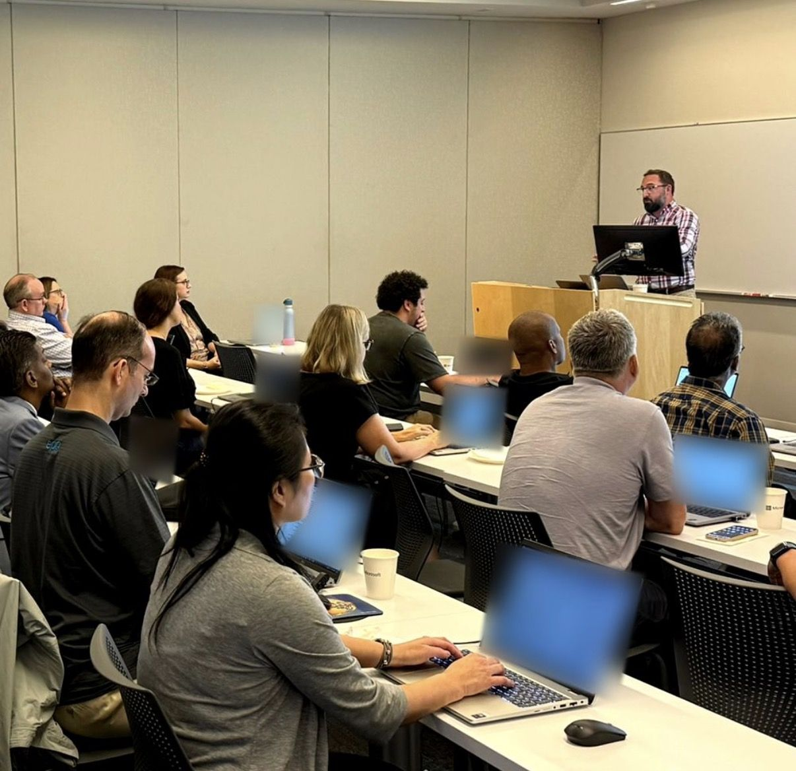

Jesse Marsh
I help corporate legal departments and law firms rethink how legal work gets done, from technology and process to flexible talent, with AI strategy and governance as one part of the picture.
TechnologyProcessTalentAI
AIGP | AI Governance Professional
Experience
Over a decade in legal and corporate services
I've spent my career working with legal teams: law firms, corporate legal departments, and the people who support them. Here's where I've been along the way.
Feb 2026 – Present
Director, Legal Transformation Solutions · Epiq
I advise corporate legal departments and law firms on end-to-end transformation, including legal technology, process optimization, flexible legal talent, and AI strategy and governance. I'm also a member of Epiq's Copilot Champions group and build with Copilot Studio and Microsoft Foundry.
Apr 2025 – Feb 2026
Entrepreneurial Sabbatical · Private jet charter
I took a shot at building my own charter business as a Private Flight Advisor with Stratos Jets. My clients came to include celebrities and CEOs, which grew my network well beyond legal. I was named 2025 Rookie of the Year, and the business is still going strong.
Apr 2023 – Apr 2025
Regional Sales Director · Wolters Kluwer ELM Solutions
Worked with legal operations and executive leaders on modernizing how they manage legal spend and matters.
Aug 2022 – Apr 2023
Regional Sales Executive · DISCO
Worked with Fortune 500 legal departments and AmLaw 200 firms in New York on eDiscovery. DISCO Expert Certified.
Jan 2020 – Aug 2022
Senior Account Executive · GoDaddy Corporate Domains (formerly Brandsight)
Joined Brandsight as an early sales hire and stayed through its acquisition by GoDaddy. Worked with IT, marketing, and legal leaders on domain and brand protection.
Nov 2018 – Jan 2020
Director of US Corporate Sales · Gandi.net
Led U.S. business development, working directly with the Paris-based COO on the U.S. go-to-market strategy.
Dec 2017 – Nov 2018
Squad Commander & Field Training Officer · St. Francis Hospital, Wilmington EMS
Trained and evaluated new providers, part of 15 years of service as an EMT.
May 2011 – Dec 2017
Law Firm Account Manager · CSC
Started in customer service and worked up to managing law firm relationships in New York and Chicago, with a focus on corporate compliance, domain management, and brand protection.
Education
B.S., Organizational Leadership, University of Delaware
Certification
AIGP (AI Governance Professional), IAPP, 2026
Building with AI
What I build with
I find the best way to understand something is to build with it. In my spare time I build AI tools and small projects of my own.
- Copilot Studio
- Microsoft Foundry
- Lovable
- Claude Code
- APIs
- MCP servers
Recommendations
What colleagues say
A few recommendations from people I've worked with, shared from LinkedIn.
I had the absolute pleasure of having Jesse on my team, and I can honestly say he is one of those rare individuals who makes a lasting impact on everyone fortunate enough to work with him.
What makes him truly special is not just his talent and natural leadership ability, but the genuine passion, kindness, and heart he brings to everything he does. He consistently puts customers first, approaches every challenge with a collaborative spirit, and goes out of his way to support, encourage, and mentor those around him.
He leads with empathy, integrity, and authenticity, earning the trust and respect of colleagues and customers alike. His passion for making a difference is contagious, and his ability to bring out the best in others is something I have always admired.
Beyond being an exceptional professional, he is simply a wonderful human being. Any organization would be incredibly lucky to have him, and I would welcome the opportunity to work alongside him again in a heartbeat. I cannot recommend him highly enough!
In my opinion, Jesse was the smartest and most open-minded salesperson at my company, which had a lot of smart and open-minded people. There are a lot of people in the legal industry who are resistant to change, but Jesse is a change-bringer. People who are looking for a younger, more creative spirit in their salesforce should give Jesse a serious look.
As someone who runs a Client Success organization, I very much appreciated when Jesse was involved in bring a new client onboard as I was always confident they hadn't been oversold and promised things we couldn't deliver. Jesse was always willing to work through a successful handoff process, was clear and direct with his communication and happy to stay involved, as needed, to ensure the client relationship was successful. Jesse would be a strong addition to any sales team looking to grow and I don't hesitate for a second to recommend him.
I worked with Jesse at DISCO. Every Customer Success Manager loved to work with him. When I asked him why, I was told it's because Jesse is a true partner. He would take the time to meet with each person on his account team to set goals for each of his clients. He would collaborate with others to create a vision. He made sure that all the people around him were empowered to lead in the areas where they should lead. Lastly, Jesse is quick to share success with others. This is a talent that a lot of sales people don't possess, and it's the thing that creates high performers. Jesse is constantly a high-performer. I hope our paths cross again.
I had the great pleasure of meeting Jesse in a training environment. While days on end in a small room learning new things via slideware isn't most folks time to shine, here is what made my first of impression of Jesse unique. His questions. It was clear from moment one that Jesse had a skill for asking questions to expose gaps, to highlight challenges, and to help me (as the instructor mind you) see what I hadn't seen before. His genuine nature coupled with this highly tuned discovery skillset not only helped me be a better instructor, but also served him in his ramp learning new technology, buyers and pain points. As anyone who has chosen a career in Sales knows, it's is the power of the question coupled with a genuine interest in the answer that makes all the difference!
I had the privilege of working alongside and being mentored by Jesse during my time at DISCO. His guidance was instrumental in my professional growth. His insightful advice, hands-on support, and willingness to share knowledge created a positive and enriching learning experience. I am grateful for the impact he has had (and still to this day has) on my career.
About Me
A little more about me
I grew up in Delaware and earned my degree in Organizational Leadership at the University of Delaware. Today I live in Sparta, New Jersey. Family comes first for me, and most of my time outside work is spent with them.
I've always found meaning in helping others, whether that's advocating for a client or serving my community. For more than 15 years I've volunteered as an EMT, including time as a squad commander training new providers. That work taught me to stay calm, listen carefully, and look after the people around me.
I care about building consensus and mutual respect with the people I work with, colleagues and clients alike. Outside of legal tech, I love aviation, and I'm curious about technology. In my spare time I build AI tools and small projects of my own, because I find the best way to understand something is to build with it.
- Roots
- Delaware native
- Home
- Sparta, New Jersey
- Service
- 15+ years as a volunteer EMT
- Off the clock
- Aviation, building AI tools and side projects
Speaking
Speaking
Over more than a decade of working with legal teams, I've learned that the things that matter most aren't on a slide. They come down to how you treat people, how you handle the hard moments, and whether clients can trust you. I'm starting to share what I've learned, mistakes included, and I'd love to talk with your group about it.

- 01
What a Career in Sales Taught Me
Lessons from going from customer service to sales leadership, working with law firms and legal departments. It's about listening first, asking better questions, and learning from the deals that didn't go your way.
- 02
Partner, Not Vendor: Building Relationships the Right Way
Why honesty, never overselling, and sharing credit build trust that lasts. How consensus and mutual respect with clients and colleagues lead to better outcomes for everyone.
- 03
Staying Steady Under Pressure
What more than 15 years as an EMT and the ups and downs of a sales career taught me about staying calm, looking after the people around you, and getting back up after setbacks.